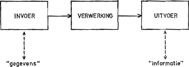

Invoer - verwerking - uitvoer
Welkom op de Invoer - verwerking - uitvoerpagina
Invoer
Dit is wat je de computer geeft. Bijvoorbeeld: je typt iets in, je klikt
op een knop, je maakt een foto, of je uploadt een bestand.
Verwerking
De computer “denkt na”. Hij neemt de invoer, verwerkt deze met regels,
berekeningen of algoritmes, en bepaalt wat het resultaat moet zijn.
Uitvoer
Dit is wat je terugkrijgt: een tekst op het scherm, een grafiek, een
print, een geluidsfragment, enzovoorts.
